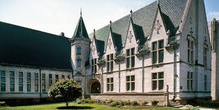
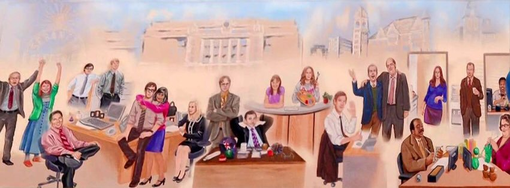

Scranton City Art Show
February 7, 2007
Albright Memorial Building, Scranton Public Library
Local artists will display their work and have it available for purchase at this event held to celebrate our create residents of the Scranton-Wilkes Barre area.
Other Scranton area artists:
- Susan Washington
- Maya Malioutina
- Justin Kovac
Admission is free!
(well it was, but this event happened 12 years ago.)
Scranton Business Park Mural Reveal
May 16, 2013
Scranton Business Park Warehouse
Come celebrate the finale of the PBS series titled, The Office, and see the reveal of a mural commemorating this special project, and the people of this workplace that made it happen.
Collaborators:
- Nellie Bertram, Commissioned Beesly for the mural
- Hidetoshi Hasagawa - Art Critic
- Frank, former Warehouse worker
Admission is free, many PBS products will be available for purchase.
(again, this event actually occurred six years ago)